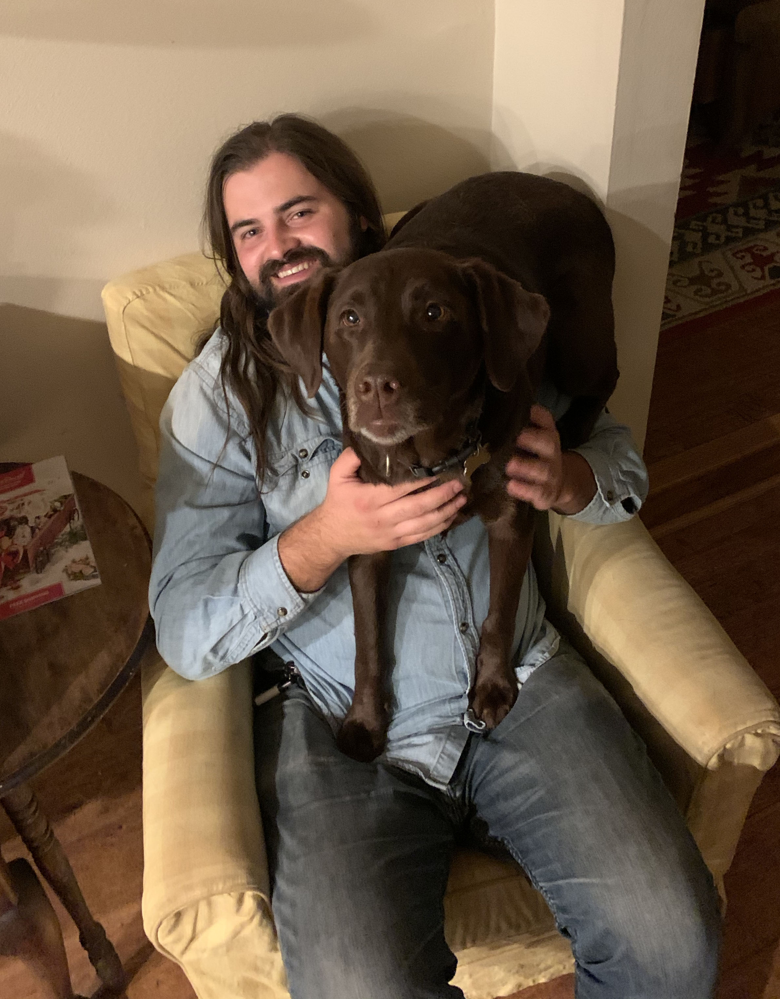
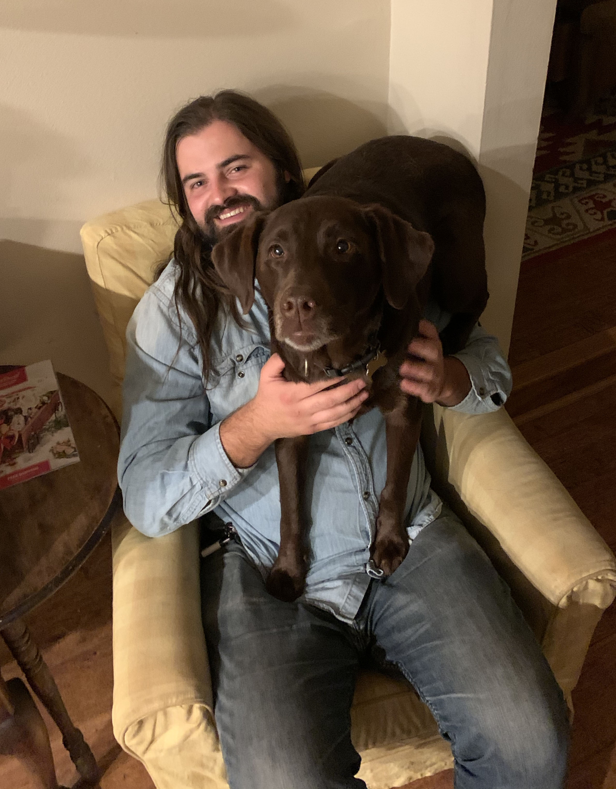

About Me
My Name is Andrew Rains I was born in San Antonio, Texas and moved here to Califonria in 1999, where I've lived ever sense. I have four Siblings and two dorky parents named Dave and Katie Rains. I am the middle child of the group with one older brother and sister and one younger brother and sister, so i basically have the whole package as far as siblings go. Growing up I enjoyed playing baseball, basketball, and skateboarding. I Also enjoyed tinkering with materials, building skateboards, potato cannons, and catapolts. From building thing I later transitioned into making art in order to put something more decorative on my skateboards. Art is where I found my passion for creating and have developed many skills in order to grow my career as an artist/graphic designer.
Where I come from?
I Was born in San Antonio Texas where my parents basically grew up. My Parents are a couple of southern souls who grew up in Oklahoma and Texas. My Mother grew up in Oklahoma City and has four siblings as well which is why I think I have so many siblings too. My Father was born in Louisville, Kentucky but grew up in a small border town of Mcallen, Texas. Growing up my parents really did a good job ingraining family oriented activities such as family dinners and road trips in order to help us not only understand the importance of family but to help us be friendly social people.
How I define myself
I define myself as a pretty simple guy who loves to make art, hang out with friends, and tries to be as adventurous as possible with in reason. Art for me has always been an outlet for me and helped me create a way to escape from the this crazy reality. I'm also a pretty goofy person and not afraid to embarress myself by saying dopy things. Although sometimes being an open book gets me into silly trouble but overall letting out my true sell for me helps me be a more geniune.
What I like
I'm the kind of person who can handle long tedious projects that has helped me to figure out issues and create a work ethic especially when it comes to making artwork. One of my favorite things to do is pulling an all nighter on an in depth painting or artistic project. The reason I like doing this from time to time is because it allows escape and reach the inner depth of my consciousness. I also really enjoy camping although I don't get to do it nearly as much as I like. Camping also profides a nice peaceful escape and provides a refreshing new rebute of the spiritual battery.
What am I going to doin the future?
I hope to develop a successful and fulfilling career in the graphic arts. When I was younger I always wanted to start up my own skateboarding company designing and manufacturing my own decks. Who knows maybe that will still be in the cards. Overall my main objective is to quit my current job working at Pepboys which has been a good job but I can feel myself outgrowing this stage or work in my life.
Places I've Lived And Visited
| # | Years | Duration or Reason | City/Town | State /Country | Comments |
|---|---|---|---|---|---|
| 01 | 1992-1999 | 7 years | San Antonio | Texas / USA | Birthplace and lived there for 7 years. |
| 02 | 1999-Current | 21+ years | Mission Viejo | Califonia / USA | Moved here in 99 and have lived here ever sence. |
| 03 | NA | Vacations | Oklahoma City | Oklahoma / USA | Have a lot of family there on my mothers side. |
| 04 | NA | Vacations / Family Reunions | Denver, Breckenridge, Boulder, Vale | Colorado / USA | Most summers my grant Aunt would rent out a cabin for the entire family in the mountains. |
| 05 | Summer 2017 | Vacation | New York City (Manhattan, Brooklyn) | New York / USA | Visited with my family and visited many museums including the Met and Natural History Museum. |
| 06 | Summer 2017 | Visit | Boston | Massachusettes / USA | Older brother and his wife used to lived there so went there to visit them. |
| 07 | Multiple times | Visit | San Fransisco | California / USA | Gone up for fun with friends just to go hang out. |
| 08 | Summer 2015 | Visit | Eugene | Oregon / USA | Drove up there with my younger Sister and her Boyfriend to visit a friend. |
| 09 | NA | Visit Family | San Antonio / McAllen | Texas / USA | My Fathers side of the family lives mainly in Texas. |
| 10 | 2002 | Vacation | Nuevo Progreso | Mexico | Drove down to Mexico from Mcallen, Texas as a kid with my family where I purchase a dried out bull skull for $11. |
| 11 | 1998 | Vacation | Seattle / Whisler | Washigton / USA and Van Couver/ Canada | Flew to Washington to visit aunt and cousins then we drove up to Cananda for a few days. |
| 12 | Summer 2011 | Road Trip | Panama City | Florida / USA | After I graduated high school I flew to Colorad and met up with my cousin and his friends, where we proceeded to drive all the way down to a beach house in Florida. We also stayed a night in Saint Louis where we went to a Cardinals baseball game. |
Design Philosophy
My main philosphy for design is the acronymn K.I.S.S, Keep It Simple Stiupid. It doesn’t matter whether you are designing a boat or a boot, simplicity always works. Strip things down to their essential, core purpose and you get the most fundamental, simplified version of the object. Overall my philosphy also arounds solving problem and answering the question why.